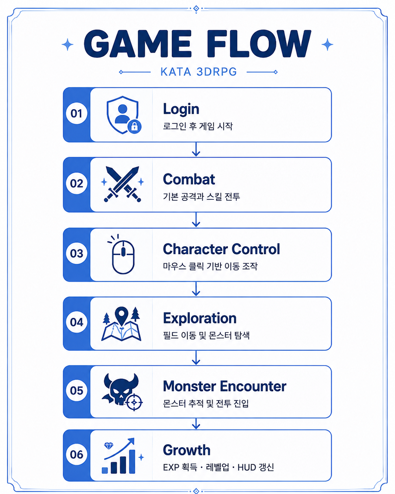
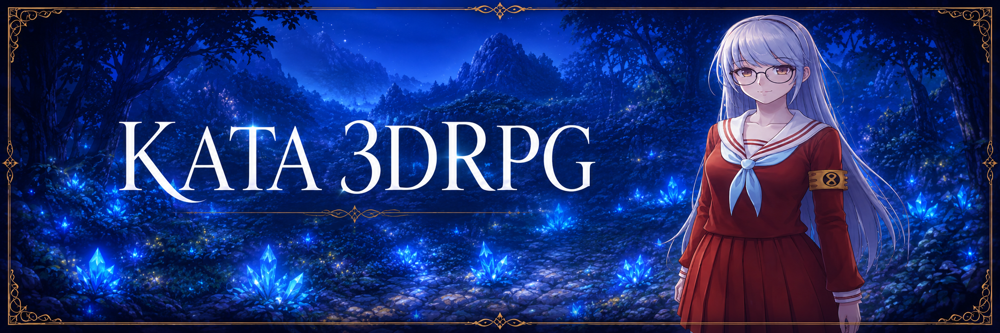
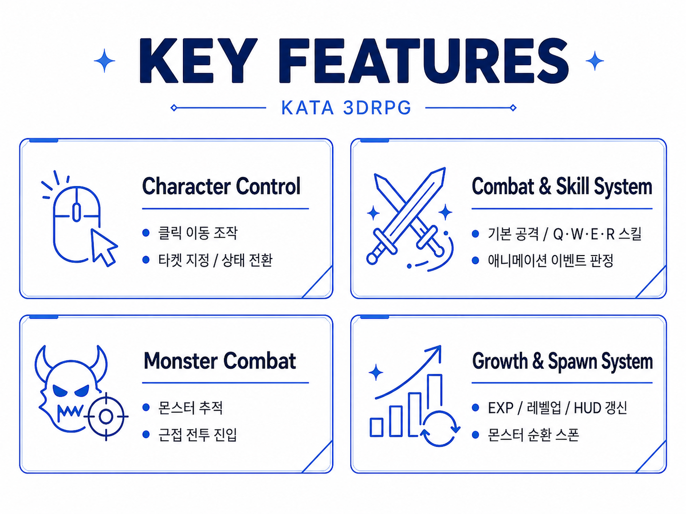

Game Video
Game Intro
Single Player 3D RPG
KATA 3DRPG
Unity · C# · 3D RPG
클릭 이동 기반 조작과 전투,
몬스터 전투 로직, 성장 시스템을 구현한
Unity 기반 3D RPG 프로젝트입니다.

CASE STUDIES
프로젝트를 진행하며 발생한 문제와 이를 해결하기 위해 적용한 개선 사례입니다.
이동, 기본 공격, 스킬 입력이 겹치는 문제
문제
클릭 이동 중 몬스터를 공격하거나,
기본 공격 중 Q/W/E/R 스킬을 사용하면
이동 상태와 공격 애니메이션이 서로 섞일 수 있었습니다.
특히 공격 판정은 애니메이션 이벤트에서 발생하고,
입력은 매 프레임 들어오기 때문에
상태 전환 타이밍을 정리할 필요가 있었습니다.
원인
플레이어 조작이
OnMouseEvent,
OnKeyboard,
UpdateMoving,
UpdateSkill,
OnHitEvent,
OnSkillEndEvent 등
여러 지점에서 처리되고 있었습니다.
단순히 입력이 들어올 때마다 애니메이션을 재생하면
기본 공격 루프와 스킬 시전,
이동 복귀가 충돌할 수 있는 구조였습니다.
해결
_castingskill,
_skillStarted,
_stopSkill,
_currentSkillHash
등의 플래그를 사용해
현재 전투 상태를 구분했습니다.
스킬 시전 중에는 이동/기본 공격 입력을 막고,
기본 공격은 OnHitEvent,
스킬은 OnSkillHitEvent와 OnSkillEndEvent에서
타격과 종료를 처리하도록 분리했습니다.
결과
이동, 기본 공격, 스킬 사용이
같은 Skill 상태 안에서도 서로 덮어쓰지 않도록 정리되었고,
애니메이션 타이밍에 맞춰
데미지를 적용할 수 있었습니다.
몬스터가 죽은 뒤 다시 생성될 때 수량이 꼬이는 문제
문제
몬스터를 일정 수 유지하려면
사망한 몬스터 수,
현재 살아있는 몬스터 수,
곧 생성될 예정인 몬스터 수를
함께 관리해야 했습니다.
그렇지 않으면 몬스터가 한꺼번에 과도하게 생성되거나,
반대로 부족하게 유지될 수 있었습니다.
원인
스폰은 코루틴으로 지연 실행되고,
몬스터 제거는 전투 결과로 즉시 발생합니다.
즉,
"이미 생성된 몬스터"
와
"생성 예약 중인 몬스터"
를 따로 관리하지 않으면
Update에서 매 프레임
중복 스폰 코루틴이 시작될 수 있는 구조였습니다.
해결
SpawningPool에서
_monsterCount
_reserveCount
를 분리했습니다.
현재 몬스터 수와 예약 수를 합쳐
목표 수보다 적을 때만 ReserveSpawn을 실행하고,
GameManager.Spawn / Despawn의
OnSpawnEvent를 통해
몬스터 수 변화를 반영했습니다.
결과
Game Scene에서 목표 몬스터 수를
안정적으로 유지할 수 있었고,
스폰 대기 중인 몬스터까지 고려해
중복 생성 가능성을 줄였습니다.
HP / EXP / Level UI 갱신이 누락될 수 있는 문제
문제
전투 중 HP가 줄거나
몬스터 처치로 EXP가 증가하고
레벨업이 발생할 때,
HUD가 항상 최신 값을 표시해야 했습니다.
값이 바뀌는 곳마다 UI를 직접 갱신하면
누락되거나 중복 호출될 수 있었습니다.
원인
HP 감소는 Stat.OnAttacked,
EXP 증가는 Stat.OnDead,
레벨업은 PlayerStats.Exp
에서 발생합니다.
데이터 변경 지점이 여러 곳이기 때문에
HUD가 각각의 흐름을 모두 직접 알고 있으면
의존성이 커지는 구조였습니다.
해결
Stat에 OnChanged 이벤트를 두고,
HP,
MaxHP,
공격력,
방어력,
이동속도 등
주요 값이 변경될 때
알림을 보내도록 했습니다.
UI_HUD는 PlayerStats.OnChanged를 구독하고,
RefreshHUD에서
HP,
MP,
EXP 게이지와 텍스트를
한 번에 갱신하도록 구성했습니다.
결과
스탯 변경과 UI 표시 로직을 분리했고,
전투 / 경험치 / 레벨업 이후의
HUD 갱신 흐름을 하나로 모을 수 있었습니다.